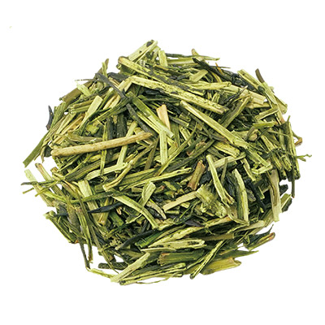
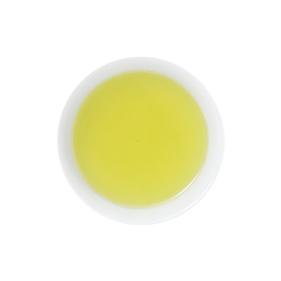
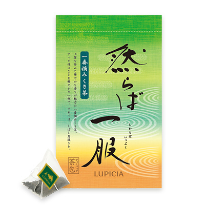

LUPICIA 8050 · g13928050
첫물 쿠키차 시카라바 잇푸쿠
一番摘みくき茶｢然らば一服｣
Kukicha "Shikaraba ippuku"
아이스티 추천



甘いのに、後味スッキリ
茎茶とは、玉露や煎茶の製造過程で選別される茎の部分を集めたお茶のこと。
すっきりとした飲み心地と甘みが特徴で、水色は煎茶のような緑色をしています。
茎は葉の部分と比べて、渋みが少なく、甘みが多いといわれています。
ルピシアでは原料にこだわり、一番茶の上質な茎のみを厳選して使用しているため、上質な茎ならではの豊かな甘みが特徴です。
シリーズの中では最も軽やかでマイルドな風味のため、毎日たくさん飲んでも飲み飽きません。
また、絶妙な火入れにより実現される華やかな香りにもこだわりました。
華やかな香りとすっきりとした飲み心地はリラックスにも最適。柔らかく優しい雰囲気をお楽しみください。
茎茶は熱湯でいれても渋みが出にくいので、渋みが苦手な方にもおすすめです。
香りを引き出したい時や、お食事後のさっぱりしたい時は熱湯で、甘みを引き出したい時にはひと冷まししたお湯でいれるのがポイントです。
特に、このお茶は水出しアイスティーが絶品！
低温でいれると甘みが浸出されやすく、甘みや香りをより感じやすくなります。
すっきりとした味わいでごくごく飲めるので、暑い日の水分補給にもおすすめです。
嬉しい時、思い悩んだ時、食事の時、リラックスしたい時、家族団らんの時などの様々なシーンで飲んでいただきやすいお茶なので、自分に、あるいは誰か他の方に、そっと差し出して飲んでみてください。然らば、一服を。
- 상품번호
- 8050
- 상품 형태
- 티백 25개入
- 가격
- 1,300円
- 판매 안내
- ※상미기한：제조일로부터1년
※차의 풍미를 해치지 않게, 서둘러 드세요. - 원재료
- 緑茶※商品の改定などにより、商品パッケージの記載内容が上記内容と一部異なる場合がございます。
- 원산지
- 日本※商品の改定などにより、商品パッケージの記載内容が上記内容と一部異なる場合がございます。
- 찻잎
- 1個
- 물
- 75-100℃
- 우림 시간
- 45秒-1分
다른 포장
보관된 상품 정보 갱신일: 2026-10-02